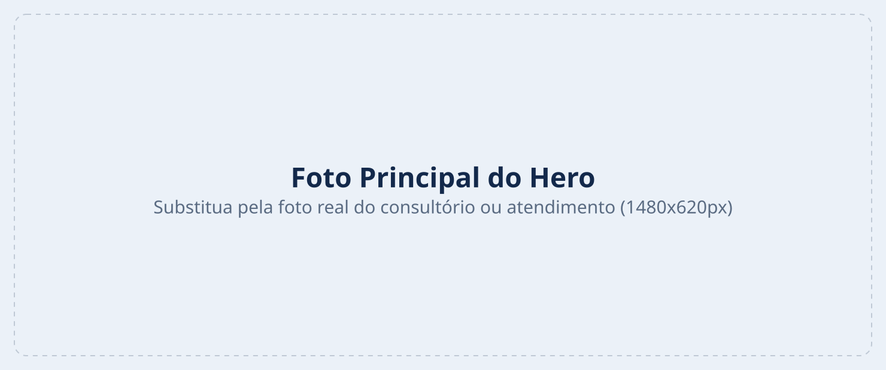
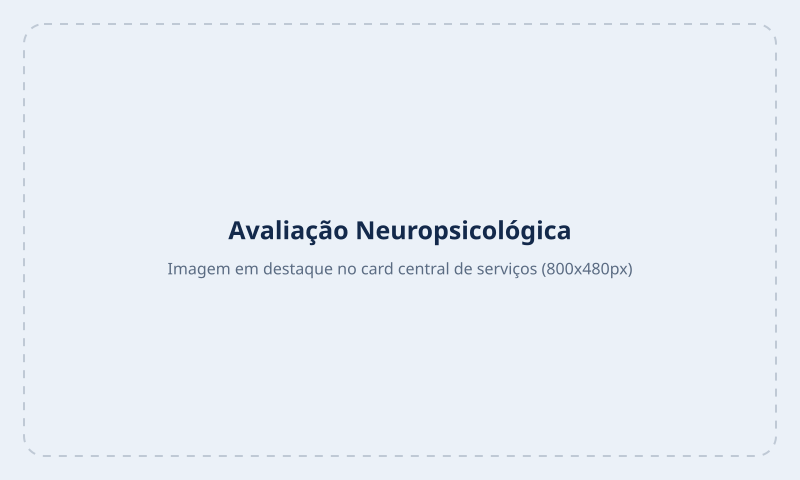
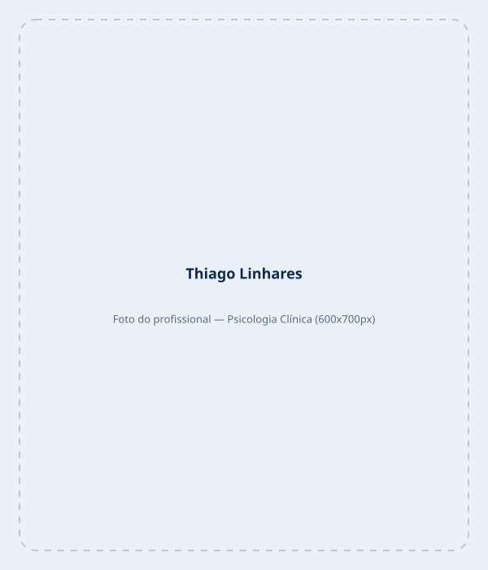
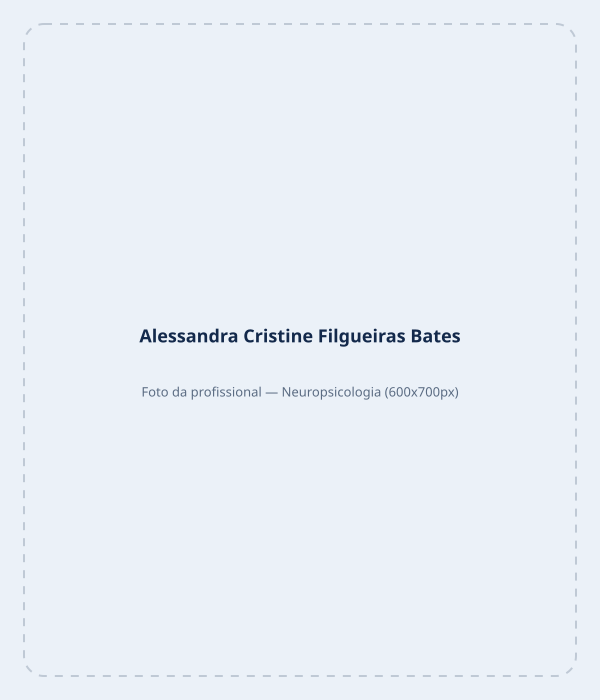
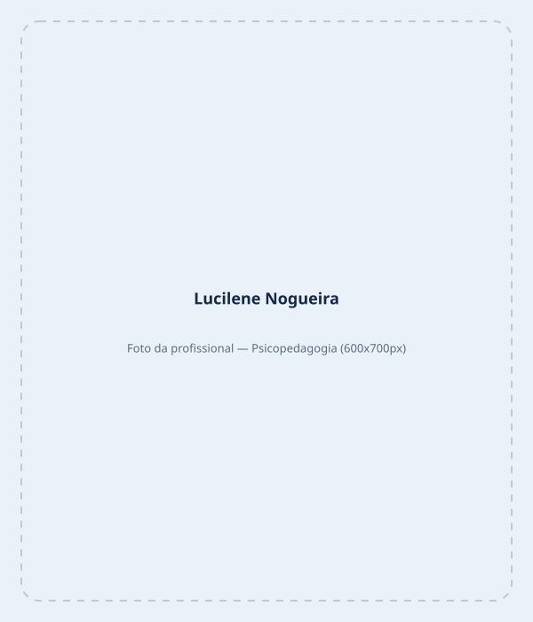
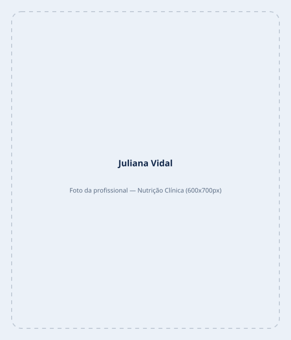
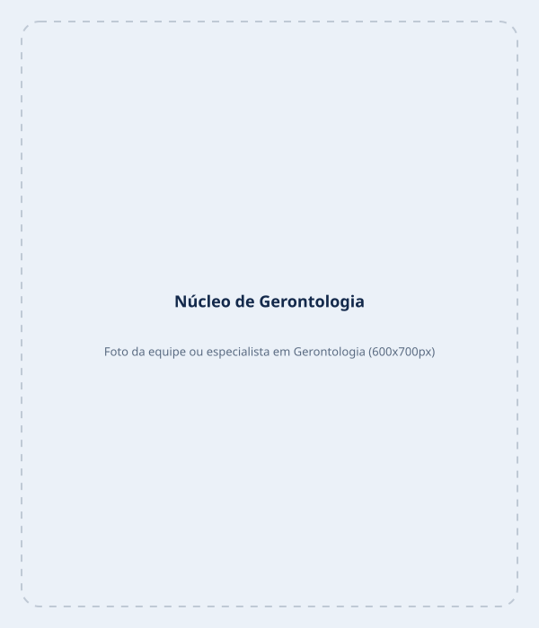
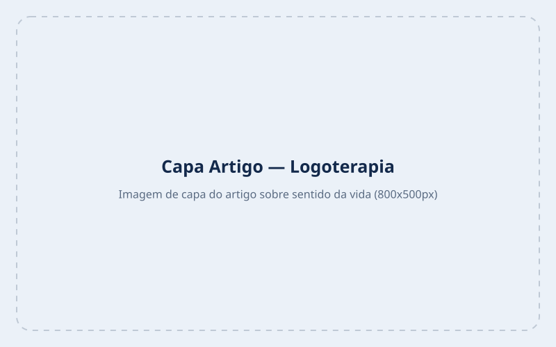
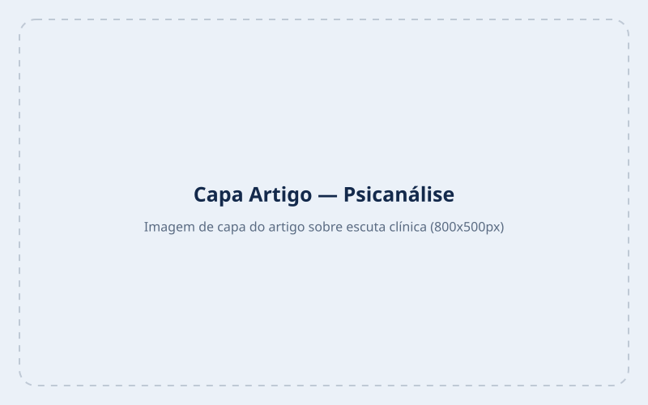
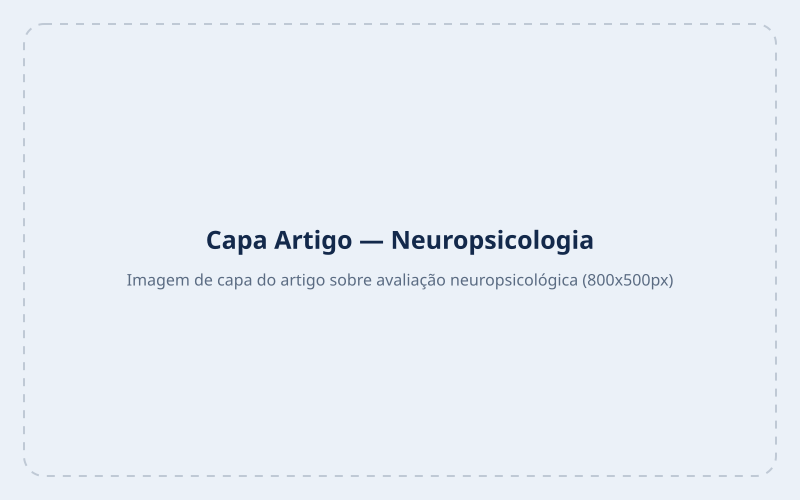

Psicologia Clínica
Psicoterapia individual para adultos, adolescentes e crianças com escuta acolhedora em Logoterapia e Psicanálise.
Agendar sessão →
Psicologia, Neuropsicologia, Psicopedagogia, Nutrição e Gerontologia no Pátio Jardins, em São Luís, e em atendimento online.

Atendimento ético, humanizado e integrado para crianças, adolescentes, adultos e idosos.
Psicoterapia individual para adultos, adolescentes e crianças com escuta acolhedora em Logoterapia e Psicanálise.
Agendar sessão →

Acompanhamento especializado nos processos de aprendizagem, dificuldades escolares e desenvolvimento cognitivo infantil e juvenil.
Orientação nutricional individualizada e comportamental para promover saúde física, equilíbrio emocional e qualidade de vida.
Cuidado integral e preventivo voltado ao envelhecimento saudável, autonomia e suporte emocional ao idoso e à família.
Agendar consulta →
Uma equipe multidisciplinar qualificada, pronta para oferecer uma escuta ética e individualizada.







Do primeiro contato pelo WhatsApp ao acompanhamento contínuo, cada etapa foi pensada para o seu bem-estar.
Entendemos a sua demanda logo no primeiro contato para direcionar você ao especialista mais adequado.
Consultórios climatizados e reservados em São Luís ou teleatendimento seguro para onde você estiver.
Respeito absoluto à confidencialidade e integração entre psicologia, neuropsicologia, nutrição e gerontologia.
Localização estratégica em São Luís com fácil acesso, estacionamento e ambientes projetados para sua privacidade.
Reflexões escritas pelos nossos especialistas para apoiar seu autoconhecimento no dia a dia.

Como a abordagem de Viktor Frankl auxilia na reconstrução de propósito diante das crises contemporâneas.

Entenda o papel da escuta analítica na transformação de conflitos afetivos e profissionais.

Saiba como funciona o mapeamento de atenção, memória e funções executivas.
Fale diretamente com nossa equipe de acolhimento pelo WhatsApp e agende sua consulta na CEPPSI Jardins ou online.
Conheça nossa história, os princípios éticos que guiam nossa clínica e o compromisso multidisciplinar com cada paciente.
A CEPPSI nasceu em São Luís (MA) com o propósito de oferecer um espaço onde o rigor científico da Psicologia caminhasse lado a lado com o acolhimento genuíno e humano.
Ao longo de mais de 10 anos de atuação, consolidamos uma equipe multidisciplinar que integra Psicologia Clínica (Logoterapia e Psicanálise), Avaliação Neuropsicológica, Psicopedagogia, Nutrição e Gerontologia na Unidade Pátio Jardins, além de atender pacientes em todo o Brasil pela modalidade online.
Promover saúde mental, desenvolvimento cognitivo e bem-estar integral por meio de uma escuta ética, humanizada e baseada em evidências científicas.
Ser referência no Maranhão em atendimento psicológico e multidisciplinar, reconhecida pela excelência técnica, acolhimento e impacto positivo na vida das pessoas.
Respeito inegociável à confidencialidade e aos códigos profissionais de cada especialidade.
Cada história é única e merece ser ouvida sem julgamentos, com empatia e presença real.
Atualização constante e uso de métodos validados na clínica, na neuropsicologia e na saúde integral.
Compreendemos o ser humano em suas dimensões emocional, cognitiva, biológica e social.
Clareza nas etapas do tratamento, pontualidade e acompanhamento próximo em toda a jornada.
Valorizamos a dignidade, o tempo e a autonomia de cada criança, adulto ou idoso atendido.
Profissionais experientes e comprometidos com o cuidado ético na CEPPSI Jardins e no atendimento online.
Psicólogo Clínico
Atendimento psicoterapêutico voltado a jovens e adultos, com foco em ansiedade, sentido de vida e desenvolvimento emocional.
Psicólogo Clínico
Atuação clínica fundamentada na Logoterapia e Análise Existencial, auxiliando pacientes na superação de crises e construção de propósito.
Psicólogo Clínico
Escuta clínica orientada pela Psicanálise para elaboração de conflitos afetivos, angústias e processos de autoconhecimento.
Avaliação Neuropsicológica
Especialista em avaliação cognitiva de crianças, adolescentes, adultos e idosos, com elaboração de laudos diagnósticos detalhados.
Psicopedagoga Clínica
Intervenção e acompanhamento nos processos de aprendizagem, alfabetização, atenção escolar e desenvolvimento infantil.
Nutricionista
Acompanhamento nutricional humanizado com foco em comportamento alimentar, saúde metabólica e qualidade de vida.
Saúde Integral do Idoso
Suporte especializado ao envelhecimento ativo, estimulação cognitiva e orientação aos familiares e cuidadores.
Preencha os dados abaixo para iniciar seu atendimento diretamente pelo WhatsApp oficial da CEPPSI.
Equipe CEPPSI